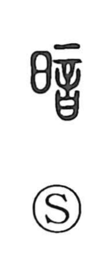

Explanation
暗 is a phono-semantic graph with 音 as its phonetic. Shirakawa reads 音 not as a mere “sound,” but as the answering sound of a covenant vessel used in shrine divination. He traces the idea back to the related graph 闇, which depicts a sound heard within the double-leaf doors 門 of a small household shrine. Written prayers (言) were placed there to question the gods; 言 itself combines a tattooing needle 辛 with a receptacle, expressing a solemn pledge to accept punishment if one misreports the divine message. At night, the vessel holding these prayer slips was believed to give forth a sound, signaling the deity’s will—this answering sound is what the ancient bronze forms of 音 show. 闇 thus evokes hearing the gods’ nocturnal visit at the shrine doors, and from this notion of indistinct, night-time sounds through which the divine intimates its will, 暗 and 闇 came to signify “dark” and “darkness.”